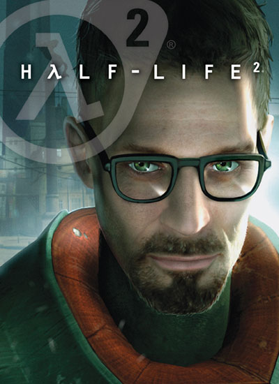
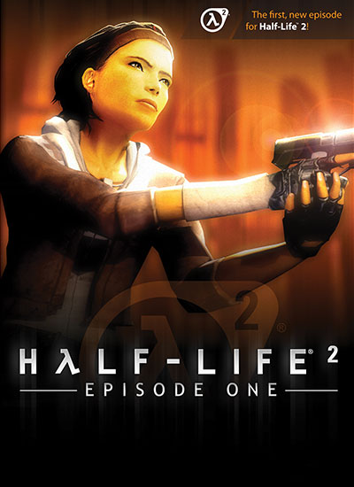
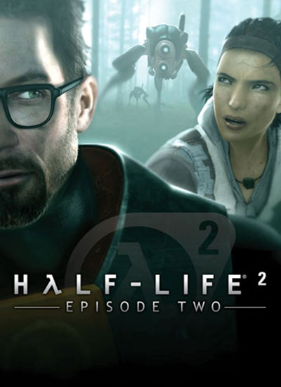

Half-Life serijal je priča o teorijskom fizičaru Gordonu Frimenu koji se zbog jedne greške nađe u centru sukoba između invazije vanzemaljaca i pokreta otpora.
Od Valveove debitantske igre davne 1998. godine pa sve do danas, saga je bila na čelu impresivne akcije i pripovedanja. U martu 2020. to nasleđe se nastavlja dok Half-Life: Alyx gura VR gejming u nove dimenzije.
Pogrešan naučni eksperiment vodi do nepredviđenih posledica. Kao Gordon Frimen, borite se protiv vanzemaljskih uljeza u impresivnoj i potresnoj akciono-avanturističkoj priči koja je postavila temelje za generaciju pucačina iz prvog lica.
Napetost i izazov Half-Life igre dostižu nivoe realizma i odziva bez presedana. U distopičnom Gradu 17, odbijte napad ekstradimenzionalnog Kombinata dok rešavate zagonetke, pobeđujete neprijatelje i istražujete prelepo ostvaren svet.
Nakon događaja u Half-Life 2, Gordon se suočava sa novom pretnjom koja bi mogla da uništi Grad 17. Zajedno sa Aliks Vens koja je pokrenuta inovativnim novim mogućnostima veštačke inteligencije presreće planove Kombinata i vodi borbu pravo do njihovih vrata.
Kombinat je otvorio portal koji preti da će zauvek izbrisati opkoljeni pokret otpora na Zemlji. Gordon i Aliks moraju da pređu nove granice u poslednjem pokušaju da zatvore portal i spasu ono što je ostalo od čovečanstva...
U periodu između prva dva dela, Aliks Vens i njen otac Ilaj su pružili prvi otpor brutalnoj okupaciji Zemlje.Poput Aliks, igrači moraju da se bore protiv neprijatelja, da rešavaju zagonetke i krenu do srca Grada 17 u kome leže sve skrivene tajne Kombinata.